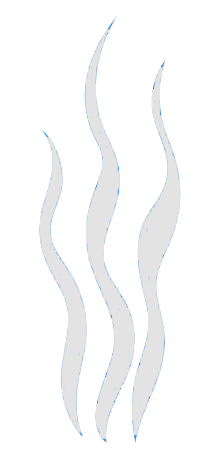
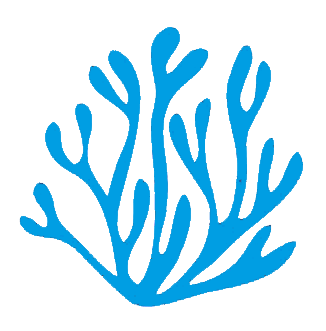
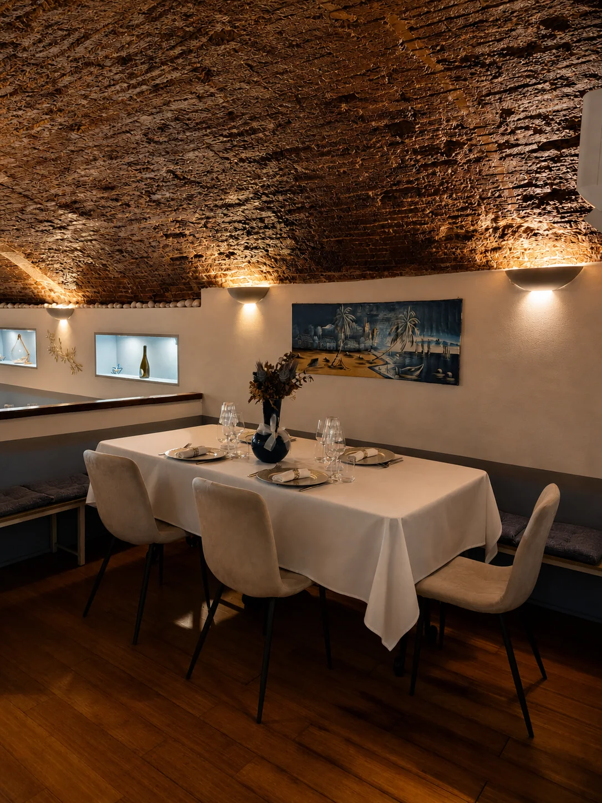
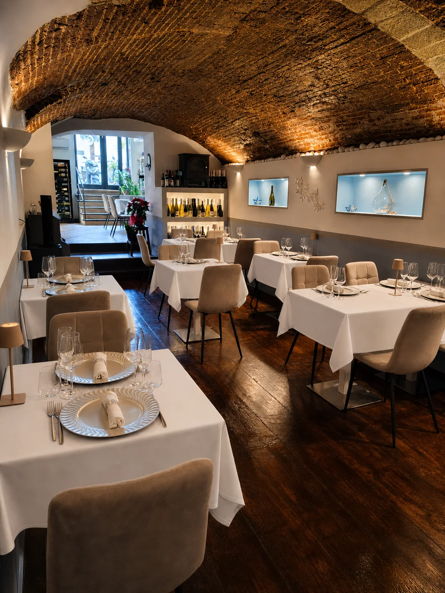

Crudi, emulsioni, vegetali
Tagli puliti, acidità misurate e una palette che lascia parlare il pesce.
Coralì è un ristorante di pesce a Varazze, in Corso Cristoforo Colombo 86. La cucina di mare segue la stagionalità: ingredienti scelti con cura, pasta fresca fatta in casa e piatti composti con precisione.
La sala ti accompagna in una esperienza unica: pietra, luce soffusa, dettagli argento e accenti azzurri che richiamano il mare. Consulta il menu con i prezzi e la carta vini per scegliere la tua cena.
2025
Travellers' Choice
Varazze
Arte in cucina


Tagli puliti, acidità misurate e una palette che lascia parlare il pesce.


Ogni giorno
Pesce, sala, luce: pochi elementi, scelti bene.


Orari
Lunedì, Martedì19:30 - 22:00
Giovedì, Venerdì19:30 - 22:00
Sabato19:30 - 22:30
Domenica a pranzo12:30 - 14:00
Domenica a cena19:30 - 22:00
MercoledìChiuso
Telefono
019 770 3829